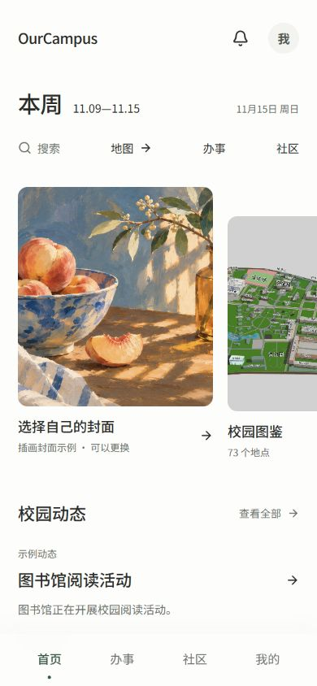
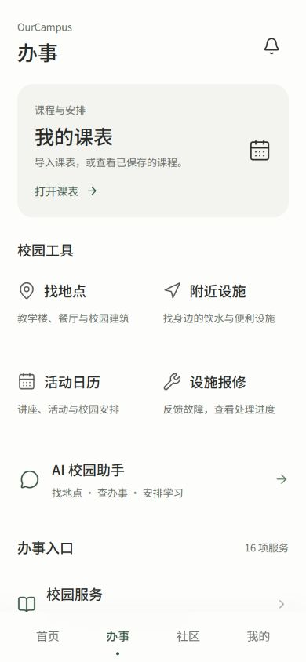
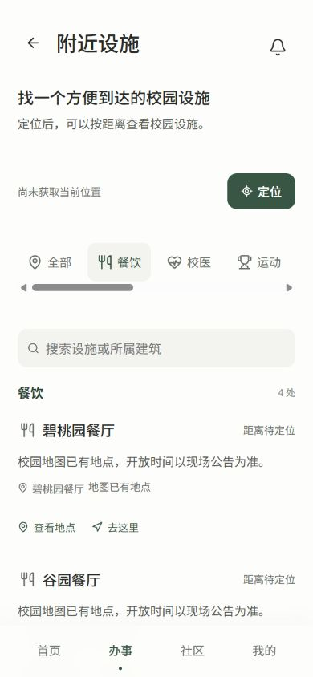
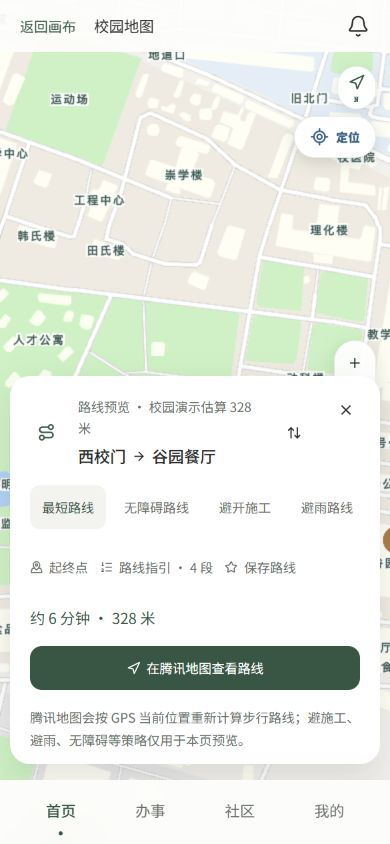
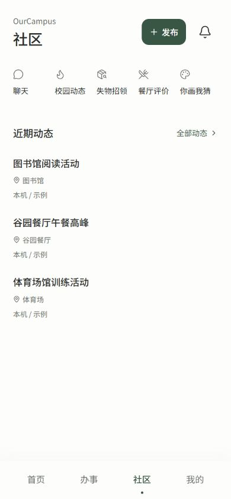
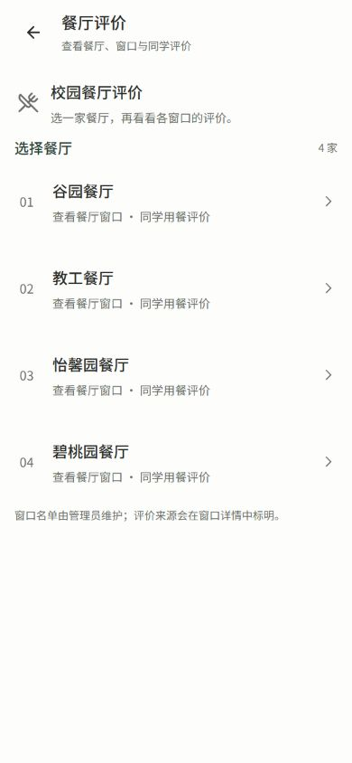
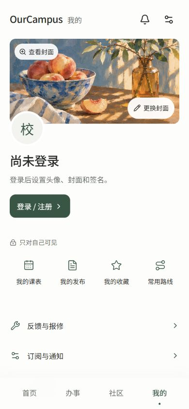
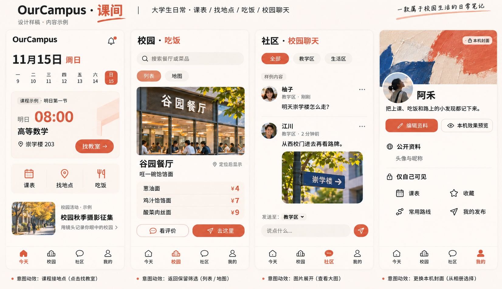
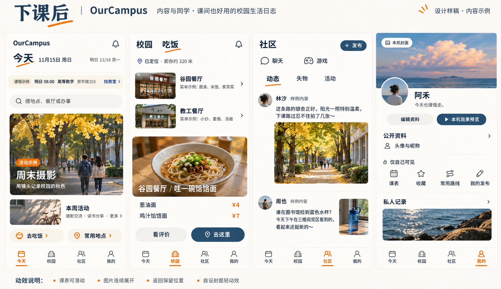

打开首页


本轮观察
首屏约三分之一展示默认静物封面；“本周”没有课程安排；个人封面与地图并列
改动判断
高优先：把第一屏还给下一节课、最近地点和相关提醒，艺术展示移到个人页和真实内容中
本页保留设计阶段的走查与三套静态方向图。后续应用实现与主要流程已经完成；实际验证范围、截图和发布边界见 整套应用预览记录。原签名尚缺，暂无新的 Android 安装包。
8 张图片均为本轮浏览器实截图。观察重点是学生完成任务时的入口、下一步与返回位置；另对照当前代码核查已登录能力，不把截图外的能力视为实测通过。

本轮观察
首屏约三分之一展示默认静物封面；“本周”没有课程安排；个人封面与地图并列
改动判断
高优先：把第一屏还给下一节课、最近地点和相关提醒，艺术展示移到个人页和真实内容中

本轮观察
需要进入“办事”后再打开课表
改动判断
高优先：已导入时首页直接展示下一节；未导入时提供可跳过的轻量入口
本轮观察
本轮设备无课表，显示 .xls 本机导入；从办事进入却标为“返回我的”
改动判断
返回文案和返回目的地都必须跟随来源。未验证已导入真实课表，教室不可继续找楼来自代码核对

本轮观察
餐饮筛选有效，但先消耗大量空间介绍定位和分类；结果只有“查看地点/去这里”
改动判断
高优先：餐厅承接窗口、菜单、评价和路线。未定位也应允许看餐厅内容，不强制定位或绕到社区

本轮观察
尚未定位，直接得到“西校门→谷园餐厅”；标注校园演示估算 328 米、约 6 分钟
改动判断
高优先：先确认起点。演示估算标注已有，但不能让学生把设备预设点误认成自己。腾讯服务本轮提示路线免费额度已用完，未验证真实路线成功

本轮观察
首屏仍是五个功能入口和三个示例动态，真实内容区没有形成阅读吸引力
改动判断
中高优先：社区应先看到内容，聊天和游戏有明确入口；示例不占据真实推荐流

本轮观察
从社区再次选择餐厅，然后才能进入窗口
改动判断
高优先：与附近餐厅、地点详情共享餐厅和窗口标识，保留当前餐厅与筛选

本轮观察
默认封面、未登录身份和四个私人工具；自定义封面只在本机
改动判断
保留个性展示，但清楚区分“公开名片”和“只有我能看到的工具”。公开封面需另接服务能力，不能仅改文案称已同步
每张截图均链接原图，可在浏览器中查看完整尺寸。本轮没有登录、发送消息、提交评价或读取私人账户资料。
TimetableDayView 已有下一节计算，但教室没有打开地点的出口；需要可靠建筑匹配和手选确认，不能猜出精确室内路线。查地点不需要登录；餐厅有真实窗口与部分现场菜单；图片已有选择、压缩、预览和移除；地图与路线已有来源说明；课表能在本机解析后预览；弹层已有部分焦点恢复、滚动锁与减少动态效果适配。这些都应接进新的完整流程，而不是另外造一套展示数据。
范围来自整款软件重构方案，覆盖一级页面、内嵌页、业务表单及通用弹层。下表是后续实施与验收清单，不代表 26 组页面已全部绘制或实现。
| 页面组 | 重做范围 | 关键状态与承接 |
|---|---|---|
| 01今天首页 | 课程、相关提醒、常用动作、内容排序 | 已/未导入、未校准、学期过期、已排课程为空、跨天、登录前后、过期提醒 |
| 02课程 | 日/周课表、导入、预览、校准、课程详情 | 解析错误、重复导入、未排时间、课程冲突、账号隔离、建筑未匹配 |
| 03校园搜索 | 地点/餐厅/设施/服务聚合结果 | 搜索范围明确，无结果、历史与清除；不声称可搜全部聊天 |
| 04地图 | 地图/列表切换、地点标记、搜索结果 | 当前选择与来源保留；Key/网络/配额失败可回退 |
| 05地点详情 | 地址/用途/关联事项/收藏/导航 | 来源、未知开放时间、相关活动/反馈 |
| 06路线 | 起点确认、模式、下一步、完整路线 | GPS/手选/演示区别；不可用、同起终点、到达 |
| 07附近设施 | 分类、定位、设施详情、补充 | 定位前仍可查；距离是直线估算，精度如实显示 |
| 08餐厅/窗口 | 吃饭入口、餐厅列表、窗口列表、详情、菜单 | 真实图片优先；缺图、缺价格、加载失败 |
| 09评价 | 筛选、排序、作者、评价详情、写评价 | 1–3 张图、压缩/上传进度、失败保留、移除/撤回 |
| 10办事目录 | 事项搜索、资料、联系方式、官方外链 | 缺时间/电话不编造；外部办理与应用内提交区分 |
| 11报修 | 地点、分类、描述、照片、确认、记录详情 | 本机/云端范围；提交中、防重复、错误重试 |
| 12活动 | 日期/时间意图、列表、详情、收藏、地点 | 今天/未来/已结束、跨午夜、来源；不发明报名系统 |
| 13社区首页 | 阅读内容优先、分类、发布、聊天/游戏入口 | 示例与真实流分开；空态不补假热度 |
| 14校园动态 | 列表、地区/类型、详情、发布 | 首页和社区进入同一详情，不做两套信息壳 |
| 15失物招领 | 分类、搜索、发布、照片、详情、完成/撤回 | 丢失/捡到区分、联系范围、表单草稿 |
| 16地区聊天 | 历史、输入、图片、地区、撤回、转动态 | 多入口共用页面与状态；翻页、原消息定位、来源栈、离线、键盘、小屏 |
| 17你画我猜 | 选地区/房间、玩家、画板、猜词、互动 | 保留画笔颜色与玩法；临时计分不称长期排行榜 |
| 18消息 | 提醒列表、详情、聊天入口、上报进度 | 未读、加载失败、原文已撤回、返回位置 |
| 19发布 | 选发布类型、关联地点、照片、预览、提交结果 | 业务表单分流，先确定餐厅/窗口再评价 |
| 20我的发布 | 分类记录、状态、具体详情、返回 | 直接定位该条记录，不能只打开另一张列表 |
| 21收藏/路线 | 保存内容、空态、删除、继续任务 | 账号隔离、设备记录归属、退出/切换账号；不承诺云端同步 |
| 22个人/访客页 | 自设封面、头像、签名、内容、真实访客预览、本机效果预览 | 真实访客页只展示实际公开字段；本机预览明确他人不可见，私人工具不进入公开内容区 |
| 23账户 | 登录、注册、验证、找回、头像昵称 | 登录后回原任务，草稿保留，退出说明 |
| 24设置/更新 | 通知订阅、地图/路线偏好、减少动态、版本 | 权限拒绝、更新失败、安装来源与签名 |
| 25管理区域 | 审核、窗口维护、地点与反馈管理 | 普通用户不见管理动作，服务端权限不变 |
| 26通用弹层 | 标题、关闭、底部动作、图片查看、确认 | 返回栈、安全区、键盘、焦点、手势可取消 |
先接通任务，再安排页面。一级入口保持“今天、校园、社区、我的”；消息在各主页面提供同一个入口，地区聊天共用页面、地区、草稿和阅读位置。
下一节、当天安排、相关提醒、可自选的常用动作；确认当天没有已排课程时显示下一次已排课程
边界：固定艺术封面、永远占位的空课表、大段示例活动
搜地点、餐厅、设施与办事；按找楼/吃饭/办事切换；列表与地图共用选择状态
边界：未定位就给出的精确距离、假实时人流、虚构预约/点餐功能
真实动态、活动、失物和同学内容；地区聊天与游戏有稳定入口；提醒和聊天入口始终可达
边界：只有功能图标的中转菜单、把公开地区大厅冒充私聊
公开名片、真实访客预览；独立标注的本机效果预览；课表管理、收藏、路线、发布记录；账户和设置
边界：把本机装扮说成公开同步、把课表和私人路线暴露给访客
首页下一节 → 课程详情 → 教室/建筑确认 → 选择起点 → 路线 → 返回原课程
下一节只依据已导入、已校准且在有效学期内的已排课程；未校准、学期过期、未排时间和课程冲突分别说明，不能把缺少安排解释为“无课”，也不推断临时调课。保留教室号，不能可靠匹配时让用户选建筑；不承诺室内导航。
校园/吃饭 → 餐厅 → 窗口与菜单 → 评价与照片 → 写评价或去这里
全流程共用餐厅/窗口 ID，返回保留筛选。看菜单不强制登录，发表时登录并保留草稿。
按事项搜索 → 资料/材料/官方入口/地点 → 联系或导航
报修从地点和问题进入，上传照片 → 确认提交范围 → 回到该条记录；本机草稿与应用云端提交分别标注。
消息提醒 → 原地区/原消息定位 → 查看上下文或作者 → 返回原阅读位置 → 返回来源提醒或社区
来源栈须跨作者页、图片预览和地图跳转保留；发送地区默认跟随当前阅读地区，“全部”时明确选择。地区聊天与临时游戏房间的数据寿命分开。
我的 → 编辑头像/封面/签名 → 核对保存范围与结果 → 真实访客预览或本机效果预览
真实访客预览只读取已保存且实际公开的字段，不能混入本机私有内容或未保存草稿；未接通公开能力的封面、签名只能标为“本机效果预览，他人不可见”。私人工具在访客页不存在；公开封面、签名与分享需另做服务端字段、存储和权限，未接通前不假装发布成功。
课表、收藏、路线及本机发布历史按账号隔离；退出或换账号后不沿用上一账号的私人记录。旧设备共用记录须明确归属，不能静默归入新账号。本机保存不等于云端同步。
顶部消息与社区进入同一个地区聊天页面；经过作者、图片或地图后仍保留原消息、阅读位置和来源栈。退出时回到来源提醒或社区，不固定跳首页。
按本轮最新显示顺序编号。每张包含四个代表页面，只用于比较同一套设计跨页面是否成立。人物、照片、课程、活动和地图均为视觉示例；图中任何数据都不代表学校、实际课程或线上用户。
本图为修正版，已替代最早将私人工具误放入公开区域的废弃图；废弃图不参与选择。首页动作栏仍有装饰分隔，实现时需控制。

用于比较同一套设计跨页面是否成立；局部列表仍有多条横线，实现时不机械照搬。
图中的“已定位／320 米”仅为示例成功状态。实际默认态应为待定位；定位后才显示真实计算并标注直线估算。局部横线仍需控制。

图下动效描述是设计意图，图片本身没有运行这些动效。活动、失物、游戏、报修、消息、发布、账户与设置仍在正式实施范围内。
以完整任务而非单页截图验收：已导入课表能到建筑；未知教室能手选；未定位不冒认当前位置；从餐厅能直达窗口评价；登录后回原草稿；消息能回原文；提交后能找到对应记录；访客看不到私人工具。各链路都覆盖返回、大字体、320px、键盘、无网、减少动态与权限拒绝。 视觉稿的隐私边界单独验收：课表、收藏、路线绝不能排在公开内容下，只能出现在明确的本人私人工具区域，真实访客页不得出现。生成的方向图如果误排，一律记录为缺陷并要求修正，不作为后续实现依据。 同时核对未校准、学期过期、未排时间与课程冲突的文案；分别验证真实访客预览和本机效果预览，并测试退出、换账号后没有上一账号私人记录。聊天须从顶部消息和社区各走一遍，经过作者、图片或地图后仍能回到原消息、阅读位置和入口来源。 本轮先完成整套流程与视觉方向的可审阅稿；未选定视觉前不再次覆盖生产界面或发布新安装包。
以下是从官方资料推导的设计建议，尚未经过本校学生访谈验证；借鉴任务组织和边界，不照搬其他产品的品牌或服务能力。
高频组件优先、部分访客查询和课程地点承接。借鉴任务优先级，不迁入公交实时数据。
突出当前相关的一步。借鉴分阶段操作，不把全部路线控制铺在首屏。
以时间意图、附近与内容组织活动，不为本项目增加未接通的购票或报名。
借鉴私人／公开边界和内容组织，不复制其品牌样式。
正文与全部图片可离线查看；以上官方参考链接打开时需要网络。参考地址于 2026年11月15日核验可访问。